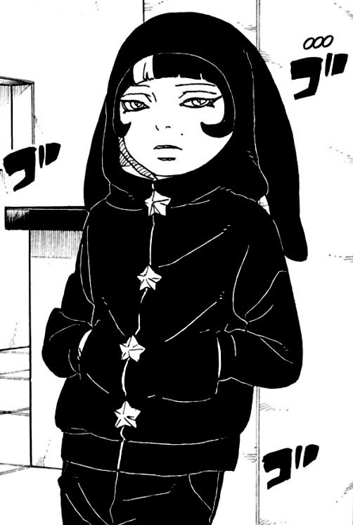
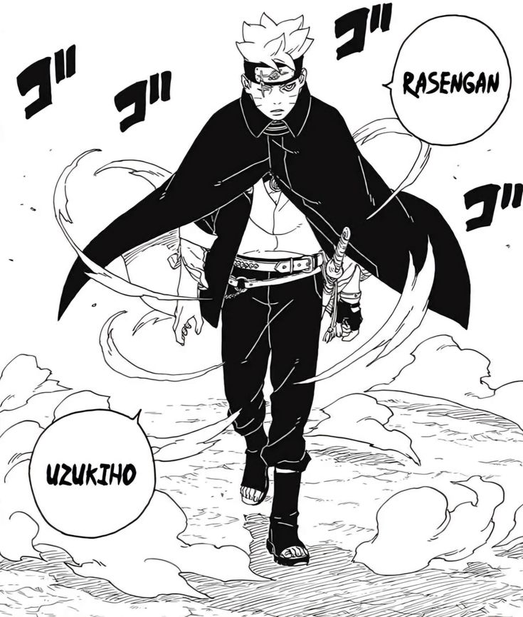

acompanha Boruto Uzumaki, filho de Naruto, que inicialmente rejeita o legado do pai, mas busca seu próprio caminho ninja ao lado de Sarada e Mitsuki. A trama evolui de missões diárias para ameaças de nível Otsutsuki (como Momoshiki e Isshiki) e a organização Kara. A trama se intensifica com a introdução de Kawaki e o arco Two Blue Vortex, onde Boruto se torna um fugitivo após uma alteração na realidade


Em Boruto: Two Blue Vortex, a realidade foi alterada por um poder que fez todos acreditarem que Kawaki é o verdadeiro filho do Naruto, enquanto Boruto Uzumaki passou a ser visto como inimigo. Por causa disso, Boruto virou um fugitivo e ficou três anos longe treinando. Quando ele retorna, está muito mais forte e começa a agir escondido para proteger a vila, mesmo sendo odiado. Ao mesmo tempo, surgem novos inimigos extremamente poderosos, como os Shinju (incluindo Jura), que ameaçam Konoha. Durante esse caos, Sasuke Uchiha acaba sendo derrotado e capturado. No geral, a história mostra Boruto lutando nas sombras para salvar todos, enquanto o mundo inteiro acredita que ele é o vilão.